Матеріали Дентсплай · журнал «ДентАрт» 2014 №1 (74)
Естет-Ікс ЕйчДі і Церам-Ікс Дуо — надійні компоненти для клінічного успіху біоміметичної реставрації
ESTHET-X HD, CERAM-X DUO ARE RELIABLE COMPOUNDS OF SUCCESSFUL BIOMIMETIC RESTORATION
На початку 90-х років минулого століття у стоматологічний світ увійшла нова філософія реставраційної стоматології, що отримала назву Біоміметичної концепції, яку розробив і вдосконалив Сергій Радлінський.1 Пряма реставрація зубів у біоміметичній концепції з використанням композитних матеріалів Дентсплай стала загальноприйнятою щоденною практикою для багатьох стоматологів. Філософія біоміметики полягає в тому, що необхідно знати і вивчати точні характеристики топографічних особливостей будови зуба, а також мати відтінки композитів, які максимально імітують кольоронасиченість, опаковість, прозорість і фізичні характеристики, такі як модуль пружності і мікрорухливості тканин.2 Укладаючи ці композити пошарово, зсередини — назовні, у топографічних межах втрачених тканин, реально отримати невидиму і довговічну реставрацію.
Вихідна клінічна ситуація
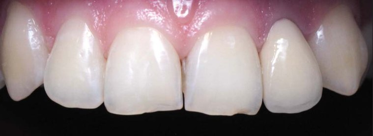
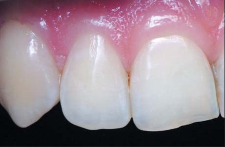
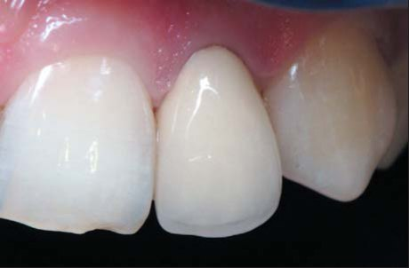
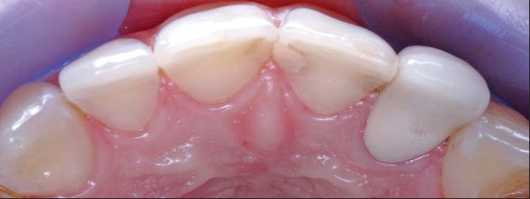
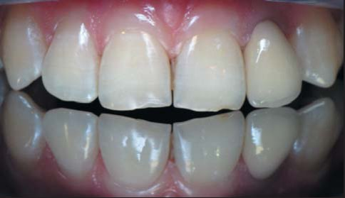
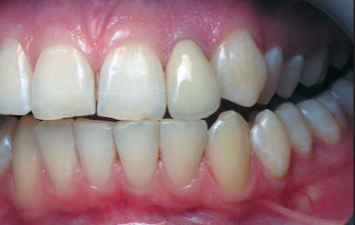
У більшості випадків пацієнти звертаються в клініку для вирішення естетичних проблем, не акцентуючи увагу на функціональних проблемах, доки вони не виявляться у більш задавнених ситуаціях. Як дизайнери усмішок, маючи широкі можливості для реалізації естетичних цілей реставрації, ми не маємо права забувати про пріоритет функції за будь-якого реконструктивного відновлення, а також про запобігання подальшим порушенням.
Використання сучасного арсеналу матеріалів і технологій Дентсплай створює умови для задоволення всіх запитів наших пацієнтів. Застосовуючи при цьому лише мінімальні відтінки композиту та інструменти, які є в кожному стоматологічному кабінеті, можна реалізувати все це в реальних часових межах з технічно нескладними процедурами.
Пацієнтка Карина, 19 років, анамнез не обтяжений, звернулася зі скаргами на відсутність естетики зубів у фронтальній ділянці, а саме наявність чорної смуги у приясенній зоні зуба 22. Близько 5 років тому часті візити до стоматолога з приводу неестетичності пломби в латеральному різці ліворуч (пацієнтку не задовольняв колір реставрації) закінчилися вибором методу лікування на користь непрямої реставрації, пацієнтці на той момент було 14 років. Зуб 22 був депульпований за протетичними показаннями і покритий металокерамічною коронкою. Таку біологічну ціну довелося заплатити за естетику, але мети не було досягнуто — результат пацієнтку не задовольнив.
Клінічно можна відзначити ознаки розвитку вторинних каріозних процесів у зубах 11, 21 на всіх проксимальних поверхнях під старими пломбами з незадовільним крайовим приляганням і навислими краями у пришийковій зоні. На ріжучому краї обох центральних різців є травматичні функціональні відколи в межах емалево-дентинного з'єднання. Зуб 22 покритий коронкою задовільної якості. Зуб 23 має вестибулярне положення, він повернутий медіально, як наслідок, відсутнє іклове ведення ліворуч.
Клінічне рішення в концепції біоміметики
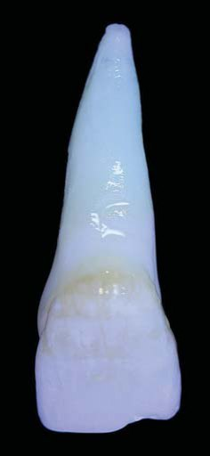
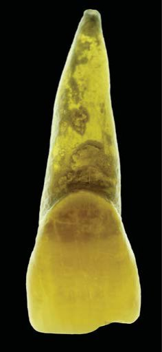
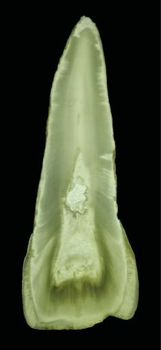
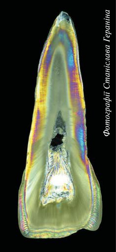
Фотографії Станіслава Гераніна
Методом вибору в аналізованій клінічній ситуації є пряма реставрація — для відновлення анатомічної форми, жувальної функції та естетичних параметрів зубів 11, 12, 22. А також реконструкція зуба 23 — зміна просторової орієнтації зуба в дузі, з оптимізацією його положення і довжини прямою реставрацією. Інтактні зуби 13,12 було взято за орієнтири для відновлення інших зубів у фронтальному ансамблі. У цьому випадку природа може служити моделлю для досягнення максимальних вершин у розумінні і відтворенні натуральності тканин, що заміщаються в реставрації, та їх формоутворення. Але для цього стоматологові необхідно багато знати про природу тканин зубів і мати у своєму арсеналі композити з розширеними можливостями для імітації не лише оптичних і колірних характеристик тканин, що заміщаються, але і їх фізичних властивостей.
Успішне виконання естетичної реставрації залежить від багатьох чинників, ключовими з яких є ретельне планування розмірів, форми, рельєфу, а також колірної конструкції майбутньої реставрації, і дуже важливо домогтися гармонійного поєднання усіх цих факторів. В естетичній стоматології поряд зі стандартними основними і додатковими методами обстеження слід широко застосовувати сучасні методи візуалізації і контролю. У протоколи діагностики та лікування важливо включити естетичний аналіз, фотографування, відеозйомку, що створює умови для мотивації та інформування пацієнта, реєстрації статусу та процесу лікування, візуалізації майбутнього результату.
Ключем до успішної реставрації також є вибір матеріалу для відновлення цих дефектів. Реставраційна система Дентсплай, використовувана в нашій практиці, заснована на нанокомпозиті Естет-Ікс ЕйчДі (Дентсплай) — матеріалі з вдалим поєднанням високих характеристик міцності і гарних естетичних якостей.6 Він має особливі якості, які розширюють можливості творчого підходу до вирішення тієї чи іншої проблеми, пов'язаної з відновленням зубів, універсальний для використання при реставрації порожнин усіх класів, властива йому скульптурна консистенція робить його ідеальним матеріалом для реставрації передніх і бічних зубів. Під терміном «скульптурність» у сучасній реставраційній стоматології розуміють здатність світлозатверджувального композитного матеріалу зберігати створену в процесі моделювання форму і не втрачати її до фотополімеризації. Ця властивість композитних матеріалів дозволяє стоматологові створювати точну анатомічну форму реставрації уже в процесі моделювання матеріалу.
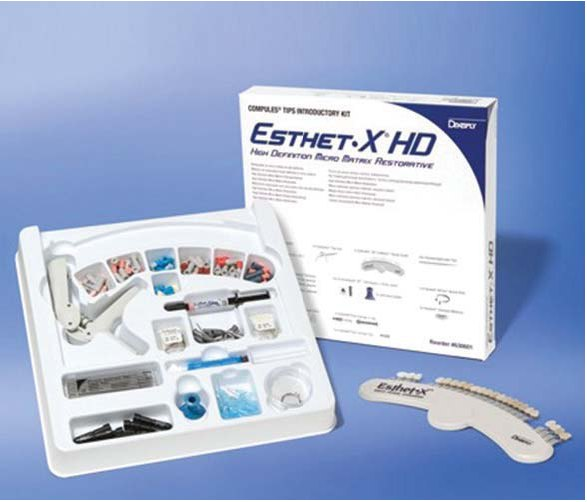
Як правило, у дорослих людей, які не мають патології кольору зубів (дисколорит, тетрацикліновий синдром, флюороз і т.д.), відтінок основної емалі відповідає типу А або В, 1 або 2 ряд кольоронасиченості. Таким чином, у біоміметичній реставрації прийнятну роль основної емалі можуть виконувати відтінки нанокомпозиту Естет-Ікс А1, В1, А2 і В2.
Завдяки оптичним законам проявляються колірні властивості зуба, що включають відтінок, блиск, флуоресценцію, опалесценцію. Тканини зуба здатні відбивати, пропускати, розсіювати світло, що й надає йому характерних візуальних рис. Опалесценція емалі — внутрішнє розсіювання світла мікропорами, що містять воду. Явище опалесценції можна зрозуміти на прикладі коштовних каменів. Наприклад, опал звичайний буває молочний, восковий, напівпрозорий, що нагадує оптичні характеристики емалі різної прозорості.
У композитній системі Естет-Ікс прозорі відтінки, представлені в матеріалі (YE, WE, АE), ідеально імітують прозорість натуральної поверхневої емалі зубів людей різного віку і, що важливо, мають рівень стирання, наближений до рівня стирання природної емалі. А простота полірування й чудова можливість матеріалу зберігати блиск поверхні надовго допомагають нашим реставраціям бути невидимими і успішно візуально інтегруватися з натуральними тканинами зубів.
Підбираючи матеріал в колірній конструкції реставрації для імітації основного дентину, слід врахувати, що природний дентин значно відрізняється від емалі, він має менший модуль пружності. Дентин, що має у своєму складі значну кількість органіки (до 20%), менш крихкий, ніж емаль, і тому є своєрідним амортизатором.
Тож щоб поліпшити біомеханіку конструкції, замість втрачених тканин основного дентину логічно було б використовувати матеріал, схожий не лише за кольоротипом (найчастіше — А3,5 за шкалою ВІТА) і опаковістю натурального дентину (яка становить 50), але й за показниками еластичності дентинних тканин.
Сергій Радлінський запропонував шлях у бік поліпшеної біомеханіки — спосіб відтворювати початкові різні властивості емалі та дентину шляхом заміщення втрачених тканин нанокомпозитами як замінниками емалей у комбінації з мікрогібридними матеріалами опакових відтінків А2, А3,5 як замінниками дентину. У реставраційній системі Дентсплай замість емалі ми використовуємо нанокомпозит Естет-Ікс ЕйчДі, а замість дентину — Спектрум ТіПіЕйч і Церам-Ікс, які мають високі показники вклеюваності й еластичності, добре розсіюють світло. До того ж Церам-Ікс з поліпшеними органічно модифікованими керамічними часточками — нанокерамічний реставраційний матеріал з унікальними властивостями. Нанокерамічна технологія, застосована в Церам-Ікс, має кілька переваг: високу біосумісність, високу стійкість до утворення тріщин і збільшений час роботи під навколишнім світлом.
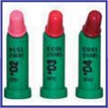
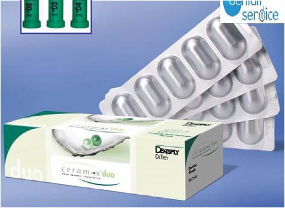
Реконструкція зуба 23
У цьому випадку ми використовували можливість вирішити проблему неправильного положення зуба в дузі прямим методом реставрації, оскільки пацієнтка відмовилася пройти курс ортодонтичного лікування. Враховуючи ризик естетичної невдачі, пацієнтка надала перевагу прямому методові корекції положення зуба в дузі. Пропонований спосіб вирішення проблеми є предметом вибору, проте дає негайний і ефективний результат.3
Після мінімального препарування необхідного обсягу тканин медіальної поверхні ікла, які виступають за межі вертикальних орієнтирів зубної дуги, були проведені адгезивна підготовка: вибіркове протравлювання зубних тканин 36% ортофосфорною кислотою (30 секунд для емалі, 15 секунд для дентину), нанесення адгезиву ІксПі-Бонд (Дентсплай), видалення розчинника і полімеризація. Після цього в пошаровій техніці накладення композиту «зсередини — назовні» побудовані оральна і вестибулярна поверхні ікла з оптимізацією його положення в дузі і відновлений акцент довжини рвучого горбика. Були укладені «пелюстки» композиту Церам-Ікс D3 — замість основного дентину і Естет-Ікс відтінків А1, YЕ — для імітації основної і прозорої емалей.
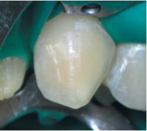
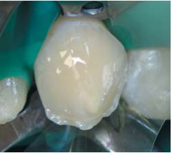
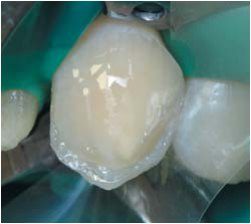
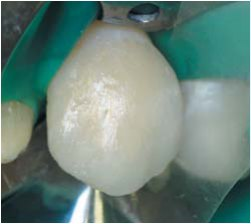
Реставрація зубів 11, 21
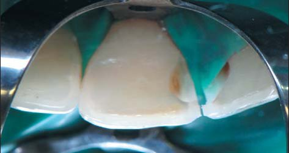
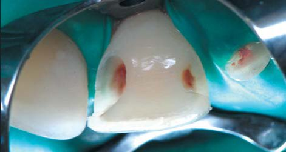
При знятті старих реставрацій знайдені каріозні порожнини на проксимальних поверхнях обох різців, що з'явилися внаслідок негерметичності старих пломб. Потім була гранично проста процедура адгезивної підготовки, оскільки вдосконалення адгезивної системи ІксПі-Бонд сприяло зменшенню чутливості цієї бондингової системи до техніки висушування дентину перед нанесенням. Техніка пошарового нанесення композитних відтінків-імітаторів стандартна, укладаємо вибрані композитні відтінки в топографії втрачених тканин. На етапах реставрації добре видно межу відтінків реставраційного матеріалу. Виділені в опакових шарах матеріалу мамелони зазвичай добре помітні в молодому віці.
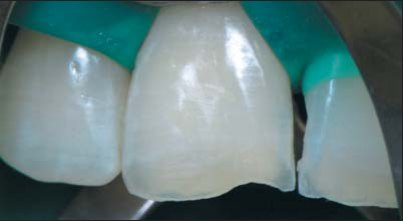
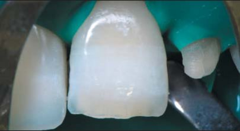
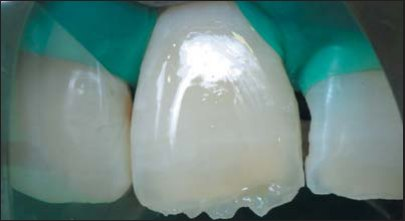
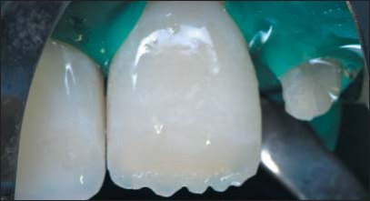
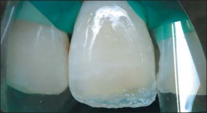
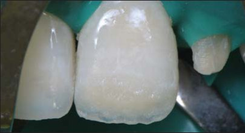
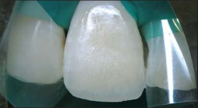
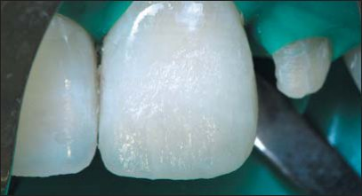
Відновлення коронки зуба 22
У найбільш «постраждалого» зуба у фронтальній ділянці після зняття коронки і переліковування кореневого каналу своїх тканин залишилося достатньо для успішного виконання прямої реставрації. Однак не варто забувати, що зуби, які зазнали ендодонтичного втручання, сприймають навантаження трохи інакше, ніж «живі» зуби, що мають пульпу.
Для виготовлення внутрішньоканальної композитної вкладки зручним матеріалом вибору став текучий композит ЕсДіАр (Дентсплай) — як нове рішення для компенсації явища полімеризаційного стресу і надійного заповнення всіх мікропросторів в устьовій зоні каналу, підготовленого під вкладку.3 Фізичні властивості матеріалу ЕсДіАр близькі до властивостей дентину. Механічна міцність на стиск: дентин — 240 МПа, ЕсДіАр — 242 МПа, що дозволяє розширити показання до використання цього матеріалу як основи для заповнення порожнини зуба, що зазнала ендодонтичного втручання. Унікальна здатність матеріалу до самоадаптації дозволяє виключити чинник недостатньої адгезії композиту до стінок в місцях його внесення, він здатний полімеризуватися без ризику адгезивного відриву шаром до 4 мм.4 Компьюла ЕсДіАр сконструйована таким чином, що її з легкістю можна ввести в устьову частину зуба для внесення композиту на саме дно порожнини, підготованої під композитну вкладку.
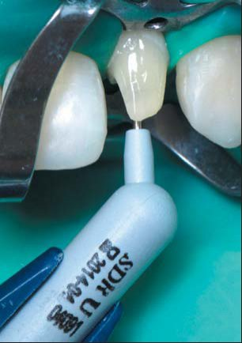
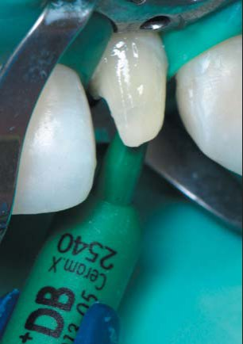
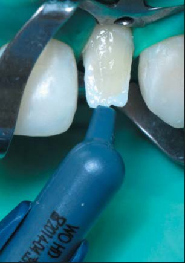
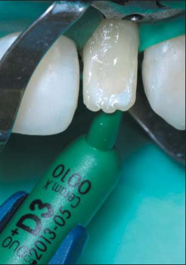
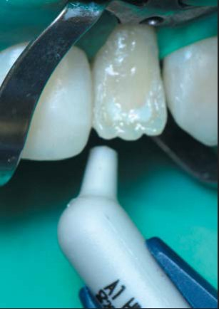
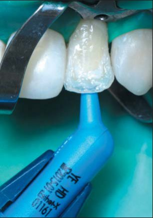
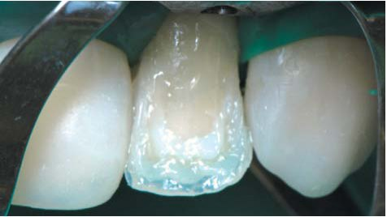
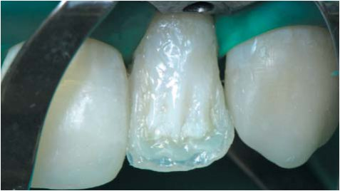
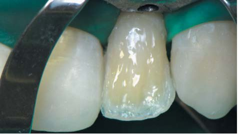
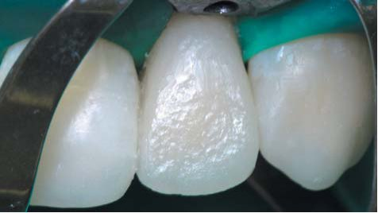
Потім відтінком DB Церам-Ікс, стійким до утворення тріщин, заповнюємо порожнину зуба в коронковій його частині. Цей ормокер має світлий відтінок з опаковістю 68 і пластичну консистенцію, його вклеювання до тканин зуба легко контролювати.
Для імітації «лампочки» зуба в топографічних межах його порожнини з урахуванням позиції висхідних колон навколопульпарного дентину вклеюємо відтінок WO нанокомпозиту Естет-Ікс, це єдиний композит, що має показник опаковості 77 і яскраво виражений білий відтінок, як у природного навколопульпарного дентину. Потім у пошаровій техніці відновлюємо оральну стінку відтінками-імітаторами основного дентину наноормокером Церам-Ікс відтінку D3, основної емалі нанокомпозитом Естет-Ікс відтінку А1 і відтінком прозорої емалі Естет-Ікс YE завершуємо реставрацію оральної стінки латерального різця. Оральна поверхня реставрації визначає положення усієї коронки в просторі.
У топографічно визначених межах шарами композитів Церам-Ікс відтінку D3, Естет-Ікс відтінків А1, YE в тій же послідовності відновлюємо вестибулярну поверхню зуба.
Полірування
Для остаточної обробки були використані форми полірувальної системи Енхенс (Дентсплай) з вмістом оксиду алюмінію, який полірує композит до матового блиску. Цей інструмент при докладані легкого тиску не видаляє додаткового обсягу матеріалу. Шліфувальні форми Енхенс дозволяють, не пошкоджуючи емаль зуба, виконувати коректне шліфування композиту в потрібних місцях. Полірування до сухого блиску проводилося формами на алмазній основі По Гоу (Дентсплай) і полірувальними пастами системи Енхенс Призма Глос — для наведення остаточного глянцю поверхні.
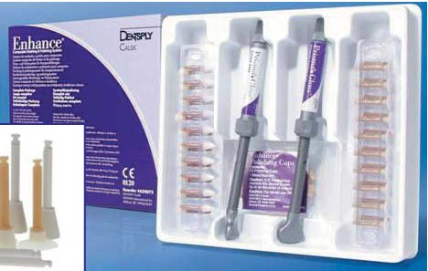
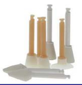
Легко і за короткий час цією полірувальною системою вдалося створити чудовий блиск поверхні, але при цьому зберегти індивідуальний мікрорельєф і текстуру поверхні реставрації як дуже важливий чинник, що визначає естетичний результат. Варіанти текстури поверхні зуба і здатність їх відтворення дозволяють нам створити різні ефекти, наприклад вікові.
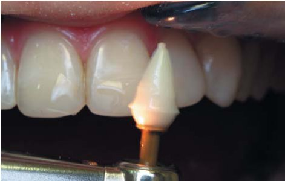
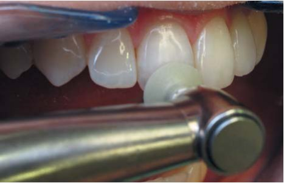
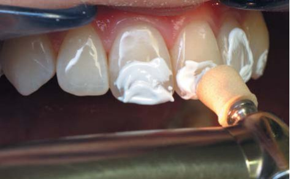
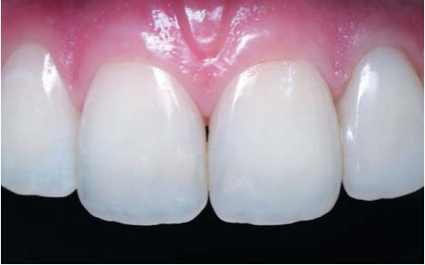
Остаточний результат
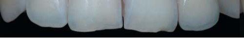
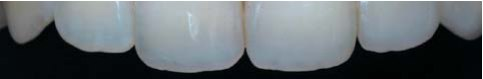
У фіналі реставрації та при реєстрації стану реставрованих зубів через 2 роки спостерігається успішна інтеграція реставрації за формою, кольором та якістю поверхні в природний вигляд усмішки. Виграшно виділяється різниця на фото до і після реставрації вигляду зуба на просвіт внутріоральним трансілюмінатором.
А функціонально значущим є факт відновлення іклового ведення, що буде надійним захистом для реставрованого зуба 22 у новій усмішці пацієнтки.
Важливим критерієм успіху лікування, крім адекватного прилягання і оклюзійної відповідності реставрації, є і гармонія з внутрішньо- і позаротовими структурами.7
Робота стоматолога модифікувалася: сьогодні дизайнер усмішки — це художник, який враховує всі естетичні побажання пацієнта і може змінити і його життя. Лише досягнення гармонії між зубами і обличчям зможе підкреслити індивідуальність кожного пацієнта.
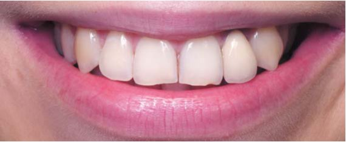
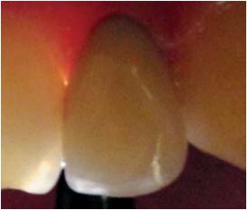
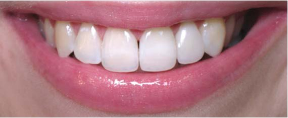
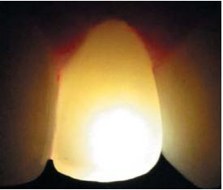
Через 2 роки після реставрації
Висновок
Для стоматолога в кожному клінічному випадку першорядне значення повинен мати функціональний аспект лікування. Можливості реставраційних матеріалів Дентсплай і сучасних методик їх використання дозволяють виконувати не лише високоестетичні, але й функціонально прийнятні конструкції. Використання нанонаповненого ормокера Церам-Ікс як дентинних шарів і нанокомпозиту Естет-Ікс замість емалі — гарнаа комбінація, яка виправдовує себе чудовими віддаленими результатами в методиці біоміметичної реставрації.
Арт-фото Юрія Дяченка
«Як великий художник, природа вміє і з невеликими засобами досягати великих ефектів»
Генріх Гайне
Література
- Радлинский С. В. Реставрационные конструкции переднего и бокового зубов//ДентАрт. —1996. —№4. –С. 22-29.
- Радлинский С.В. Биомеханика зубов и реставраций//ДентАрт. —2006. —№2. —С.42-48.
- Ветчинкин А.В.. Клиническое применение методики «Эстетические основы формообразования зубов» при реконструкции верхних и боковых зубов методом прямого восстановления//Клиническая стоматология. –2003. —№4. –С. 8-12.
- SDR Scientific Compendium (p. 62-64). www. Dentsply
- Грютцнер А. Текучий композит ЭсДиАр — умный заменитель дентина // ДентАрт. —2011. —№3. —С.57.
- Грютцнер А. Эстет-Икс — новый композит нового класса//ДентАрт. —2000. —2. —С 41-49.
- Dietschi D., Dietschi J.M. Current Developments in Composite Materials and Techniques // Practical Periodontics and Esthetic Dentistry. —1996. —№7. —P. 643-651.